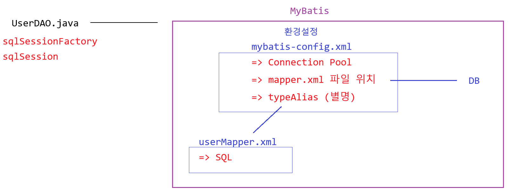

- MyBatis는 ORM은 아니고 그냥 Mapper이다
- ORM (Object Relational Mapping : 객체 관계 매핑)
- ORM(Object Relational Mapping) 프레임워크는 데이터베이스와 객체와의 관계를 맵핑시켜 퍼시스턴스 로직 처리를 도와주는 프레임워크이다.
- 자바의 JDBC를 이용할 경우 Java 언어와 SQL언어가 한 파일에 존재해서 재사용성이 좋지 않음
- MyBatis는 JDBC의 이런 단점을 개선하여 SQL 명령어를 별도의 XML 파일에 분리하여 SQL 명령어와 자바 객체를 매핑해주는 기능을 제공

- 대표적으로 iBatis와 hibernate, JPA가 있다
- 관계를 매핑시킬 때, 이름이 똑같아야 한다.
CREATE TABLE boardJSP( seq NUMBER NOT NULL, -- 글번호 (시퀀스 객체 이용) id VARCHAR2(20) NOT NULL, -- 아이디 name VARCHAR2(40) NOT NULL, -- 이름 email VARCHAR2(40), -- 이메일 subject VARCHAR2(255) NOT NULL, -- 제목 content VARCHAR2(4000) NOT NULL, -- 내용 ref NUMBER NOT NULL, -- 그룹번호 lev NUMBER DEFAULT 0 NOT NULL, -- 단계 step NUMBER DEFAULT 0 NOT NULL, -- 글순서 pseq NUMBER DEFAULT 0 NOT NULL, -- 원글번호 reply NUMBER DEFAULT 0 NOT NULL, -- 답변수 hit NUMBER DEFAULT 0, -- 조회수 logtime DATE DEFAULT SYSDATE ); CREATE SEQUENCE seq_boardJSP NOCACHE NOCYCLE;public class BoardDTO { private int seq; private String id, name, email, subject, content; private int ref, lev, step, pseq, reply; private int hit; private Date logtime; }
특징
- MyBatis는 SQL쿼리문, 예외처리, 트랙잭션 관리들을 XML형식으로 관리한다
- myBatis는 자바오브젝트와 SQL문 사이의 자동 매핑 기능을 지원하는 ORM 프레임워크이다
- SQL문과 자바코드를 분리함으로 인해 자바 개발자는 쿼리문을 신경 쓰지 않아도 된다.
예시
환경 설정
- db.properties → yml임
jdbc.driver=oracle.jdbc.driver.OracleDriver jdbc.url=jdbc:oracle:thin:@localhost:1521:xe jdbc.username=c##java jdbc.password=oracle - mybatis-config.xml
<?xml version="1.0" encoding="UTF-8"?> <!DOCTYPE configuration PUBLIC "//mybatis.org//DTD Config 3.0//EN" "http://mybatis.org/dtd/mybatis-3-config.dtd" > <configuration> <properties resource="db.properties"></properties> <typeAliases> <typeAlias type="user.bean.UserDTO" alias="user"/> </typeAliases> <environments default="development"> <environment id="development"> <transactionManager type="JDBC" /> <dataSource type="POOLED"> <property name="driver" value="${jdbc.driver}"/> <property name="url" value="${jdbc.url}"/> <property name="username" value="${jdbc.username}"/> <property name="password" value="${jdbc.password}"/> </dataSource> </environment> </environments> <mappers> <mapper resource="mapper/userMapper.xml"/> </mappers> </configuration><properties resource="db.properties"></properties>로 db.properties 정보들 받음<typeAliases>를 통해 기존에는parameterType="user.bean.UserDTO"로 받아야 하는 것을 parameterType="user" 로 짧게 바꿀 수 있음. 즉, 별명 짓기임.
<environments default="development"> <environment id="development"> <transactionManager type="JDBC" /> <dataSource type="POOLED"> <property name="driver" value="${jdbc.driver}"/> <property name="url" value="${jdbc.url}"/> <property name="username" value="${jdbc.username}"/> <property name="password" value="${jdbc.password}"/> </dataSource> </environment> </environments> <mappers> <mapper resource="mapper/userMapper.xml"/> </mappers> </configuration>environments태그는 MyBatis가 사용할 환경을 정의transactionManager가JDBC로 설정되어 있으므로, MyBatis가 데이터베이스 연결에 직접 트랜잭션을 관리한다.dataSource는POOLED타입으로 설정되어 있어, MyBatis가Connection Pool을 사용해 데이터베이스 연결을 관리한다- 그 밑은
mappers설정을 통해 mapper/userMapper.xml을 사용한다.
회원 가입
- UserInsertService
public class UserInsertService implements UserService{ @Override public void execute() { System.out.println(); Scanner sc = new Scanner(System.in); System.out.print("이름 입력 : "); String name = sc.next(); System.out.print("아이디 입력 : "); String id = sc.next(); System.out.print("비밀번호 입력 : "); String pwd = sc.next(); UserDTO userDTO = new UserDTO(name, id, pwd); UserDAO userDAO = UserDAO.getInstance(); boolean check = userDAO.write(userDTO); if (check) System.out.println("등록이 완료되었습니다"); else System.out.println("등록이 실패하였습니다"); } }
- UserDAO
public boolean write(UserDTO userDTO) { boolean check = false; SqlSession sqlSession = sqlSessionFactory.openSession(); //생성 int su = sqlSession.insert("userSQL.write", userDTO); sqlSession.commit(); sqlSession.close(); if(su > 0) check = true; return check; }sqlSessionFactory.openSession();을 통해 sqlSession를 생성하여 MyBatis에 접근
<insert id="write" parameterType="user"> <!-- 원래는 user.bean.UserDTO인데 typeAlias로 지정함 --> insert into usertable values (#{name}, #{id}, #{pwd}) </insert>- 회원 가입은
insert이기 때문에 sqlSession의insert()함수를 호출하고, userMapper.xml의 id=”write”를"userSQL.write"로 접근한다. - 이때, (#{name}, #{id}, #{pwd})는 UserDTO의 필드와 일치해야 한다.
public class UserDTO { private String name; private String id; private String pwd; }
회원 조회
- UserSelectService
public class UserSelectService implements UserService { @Override public void execute() { System.out.println(); UserDAO userDAO = UserDAO.getInstance(); List<UserDTO> list = userDAO.getAllList(); for (UserDTO userDTO : list) { System.out.println(userDTO.getName() + "\t" + userDTO.getId() + "\t" + userDTO.getPwd()); } } } - UserDAO
public List<UserDTO> getAllList() { SqlSession sqlSession = sqlSessionFactory.openSession(); //생성 List<UserDTO> list = sqlSession.selectList("userSQL.getAllList"); sqlSession.close(); return list; }- 정보 조회이므로
commit()하지 않는다. userMapper.xml의 id="getAllList"를 호출
- 정보 조회이므로
- userMapper.xml
<resultMap type="user" id="userResult"> <result column="NAME" property="name" /> <result column="ID" property="id" /> <result column="PWD" property="pwd" /> </resultMap> <select id="getAllList" resultMap="userResult"> select * from usertable </select>- 여기서 resultMap은 데이터베이스에서 가져온 결과 값을 Java 객체의 필드와 일치시켜 주는 매핑 설정이다.
<result column="NAME" property="name" />: 데이터베이스의NAME컬럼을 Java 객체의name필드에 매핑합니다.<result column="ID" property="id" />: 데이터베이스의ID컬럼을 Java 객체의id필드에 매핑합니다.<result column="PWD" property="pwd" />: 데이터베이스의PWD컬럼을 Java 객체의pwd필드에 매핑합니다.
- 여기서 resultMap은 데이터베이스에서 가져온 결과 값을 Java 객체의 필드와 일치시켜 주는 매핑 설정이다.
회원 검색
- 조건
- 번호 선택 : 1번 선택 검색을 원하는 이름 입력 : 홍 (홍이 들어간 이름을 다 가져온다) 2번 선택 검색을 원하는 아이디 입력 : n (n이 들어간 아이디를 다 가져온다) 단 <select id="search" 는 1개여야 한다 -> 요것이 문제의 핵심!
- UserSearchService
public class UserSearchService implements UserService { @Override public void execute() { Scanner scanner = new Scanner(System.in); System.out.println(); System.out.print("1. 이름으로 검색\n2. 아이디로 검색\n번호 선택 : "); int opt = scanner.nextInt(); String key, type; List<UserDTO>list = null; switch (opt) { case 1: System.out.print("검색을 원하는 이름 입력 : "); key = scanner.next(); type = "name"; list = UserDAO.getInstance().search(key, type); break; case 2: System.out.print("검색을 원하는 아이디 입력 : "); key = scanner.next(); type = "id"; list = UserDAO.getInstance().search(key, type); break; } if(list != null) { for(UserDTO user : list) { System.out.println(user.getName()+ " " + user.getId()+ " "+ user.getPwd()); } } } }type이라는 임의의 string을 만들어서 search 함수에 넣었다 → 추후 쿼리문 삽입하여 활용
- UserDAO
public List<UserDTO> search(String value, String type){ SqlSession sqlSession = sqlSessionFactory.openSession(); HashMap<String,String>data = new HashMap<>(); data.put("type",type); data.put("value",value); List<UserDTO> list = sqlSession.selectList("userSQL.search", data); sqlSession.close(); return list; }- HashMap으로 type과 value를 저장하여 이후 xml파일에서 활용한다.
- userMapper.xml
<select id="search" parameterType="HashMap" resultType="user"> select * from usertable where ${type} like '%${value}%' </select>- #{ } → 자동으로 ‘ ‘ 처리가 된다 ⇒ 따라서 여기서 사용하면 안된다
- 따라서 ‘ ‘ 처리를 안 시킬려면 $ { } 로 변수를 받아야 한다.
- resultType에서 user를 해놓으면 UserDTO 형태가 List 형태로 반환이 된다.